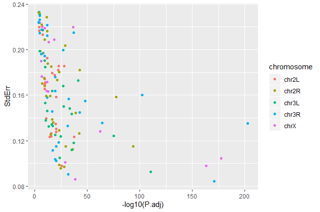
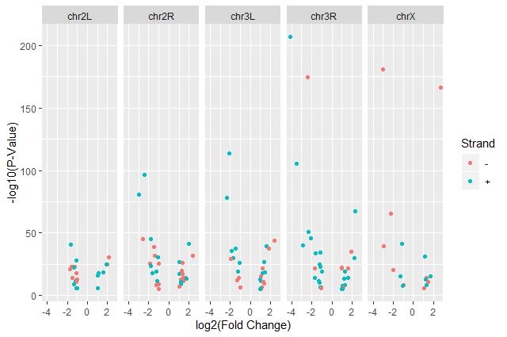
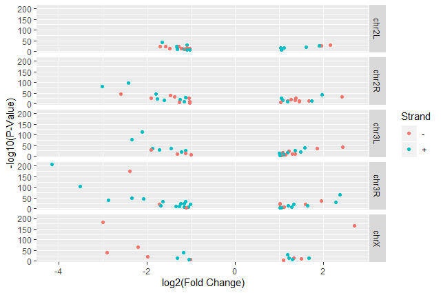
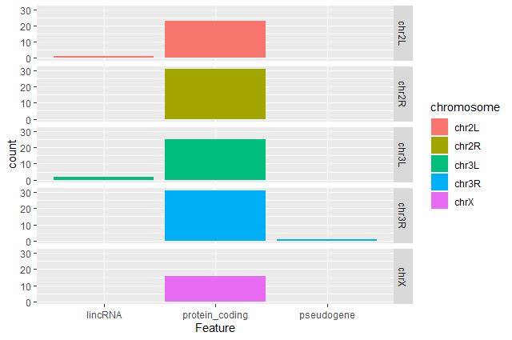

RNA Seq Counts to Viz in R
 Bérénice Batut
Bérénice Batut Fotis E. Psomopoulos
Fotis E. Psomopoulos Toby Hodges
Toby HodgesOverview
question Questionsobjectives Objectives
How can I create neat visualizations of the data?
requirements Requirements
Describe the role of data, aesthetics, geoms, and layers in
ggplotfunctions.Customize plot scales, titles, subtitles, themes, fonts, layout, and orientation.
- Introduction to Galaxy Analyses
- Sequence analysis
- Quality Control: slides slides - tutorial hands-on
- Mapping: slides slides - tutorial hands-on
- User Interface and Data Manipulation
- RStudio in Galaxy: tutorial hands-on
- Introduction to Galaxy Analyses
- R basics in Galaxy: tutorial hands-on
- Advanced R in Galaxy: tutorial hands-on
- Transcriptomics
- Reference-based RNA-Seq data analysis: tutorial hands-on
time Time estimation: 1 hour
Supporting Materials
last_modification Last modification: Jan 6, 2021
Introduction
comment Comment
This tutorial is significantly based on the Carpentries “Intro to R and RStudio for Genomics” lesson
With RNA-Seq data analysis, we generated tables containing list of DE genes, their expression, some statistics, etc. We can manipulate these tables using Galaxy, as we saw in some tutorials, e.g. “Reference-based RNA-Seq data analysis”, and create some visualisations.
Sometimes we want to have some customizations on visualization, some complex table manipulations or some statistical analysis. If we can not find a Galaxy tools for that or the right parameters, we may need to use programming languages as R or Python.
tip Prerequisites
It is expected that you are already somewhat familiar with the R basics (how to create variables, create and access lists, etc.) If you are not yet comfortable with those topics, we recommend that you complete the requirements listed at the start of this tutorial first, before proceeding.
If you are starting with this tutorial, you will need to import a dataset:
hands_on Hands-on: Using datasets from Galaxy
- Upload the following URL to Galaxy:
https://zenodo.org/record/3477564/files/annotatedDEgenes.tabularNote the history ID of the dataset in your Galaxy history
Rstudio in Galaxy provides some special functions to import and export from your history:
annotatedDEgenes <- read.csv(gx_get(2), sep="\t") # will import dataset number 2 from your history, use the correct ID for your dataset.hands_on Hands-on: Using datasets without Galaxy
Read the tabular file into an object called
annotatedDEgenes:## read in a CSV file and save it as 'annotatedDEgenes' annotatedDEgenes <- read.csv("https://zenodo.org/record/3477564/files/annotatedDEgenes.tabular", sep="\t")
In this tutorial, we will take the list of DE genes extracted from DESEq2’s output that we generated in the “Reference-based RNA-Seq data analysis” tutorial, manipulate it and create some visualizations.
Agenda
In this tutorial, we will cover:
hands_on Hands-on: Launch RStudio
Depending on which server you are using, you may be able to run RStudio directly in Galaxy. If that is not available, RStudio Cloud can be an alternative.
tip Tip: Launch RStudio in Galaxy
Currently RStudio in Galaxy is only available on UseGalaxy.eu
- Open the Rstudio tool tool by clicking here
- Click Execute
- The tool will start running and will stay running permanently
- Click on the “User” menu at the top and go to “Active InteractiveTools” and locate the RStudio instance you started.
tip Tip: Launch RStudio Cloud if not available on Galaxy
If RStudio is not available on the Galaxy instance:
- Register for RStudio Cloud, or login if you already have an account
- Create a new project
Visualization
In RNA-seq data analysis and other omics experiments, visualization are an important step to check the data, their quality and represent the results found for publication.
ggplot2 is a plotting package that makes it simple to create complex plots from data in a data frame. It provides a more programmatic interface for specifying what variables to plot, how they are displayed, and general visual properties. Therefore, we only need minimal changes if the underlying data change or if we decide to change from a bar plot to a scatter plot. This helps in creating publication quality plots with minimal amounts of adjustments and tweaking.
ggplot2 graphics are built step by step by adding new elements, i.e. layers:
ggplot(data = <DATA>, mapping = aes(<MAPPINGS>)) +
<GEOM_FUNCTION>() +
<GEOM_FUNCTION>() +
<GEOM_FUNCTION>()
Adding layers in this fashion allows for extensive flexibility and customization of plots.
Volcano plot
hands_on Hands-on: First plot, step by step
Load
ggplot2library(ggplot2)tip Tip: Didn’t work?
You might need to install ggplot2 first
> install.packages("ggplot2")Bind a plot to a specific data frame
ggplot(data = annotatedDEgenes)A new window will open in the bottom-right panel
Define a mapping (using the
aesaesthetic function), by selecting the variables to be plotted and specifying how to present them in the graph, e.g. as x/y positions or characteristics such as size, shape, color, etc.ggplot(data = annotatedDEgenes, aes(x = log2.FC., y = P.value))X-axis is now the log2 FC and and Y-axis the p-value
comment Data format
Some
ggplot2functions need data in the ‘long’ format:
- a column for every dimension
- a row for every observation
Well-structured data will save you lots of time when making figures with
ggplot2.Add information about the graphical representations of the data in the plot (points, lines, bars) using
geomsfunction added via the+operatorggplot(data = annotatedDEgenes, aes(x = log2.FC., y = P.value)) + geom_point()comment Graphical representations of the data in the plot
ggplot2offers many differentgeoms; we will use some common ones today, including:
geom_point()for scatter plots, dot plots, etc.geom_boxplot()for, well, boxplots!geom_line()for trend lines, time series, etc.
We should obtain our first ggplot2 plot:

This plot is called a volcano plot, a type of scatterplot that shows statistical significance (P value) versus magnitude of change (fold change). The most upregulated genes are towards the right, the most downregulated genes are towards the left, and the most statistically significant genes are towards the top. With this plot, we can then quickly identify genes with large fold changes that are also statistically significant, i.e. probably the most biologically significant genes.
The current version of the plot is not really informative, mostly due to the high number of p-values close to zero. In order to resolve this, we will apply -log10() to the y-axis values.
hands_on Hands-on: Volcano plot with log values on y-axis
Create volcano plot with log values on the y-axis
ggplot(data = annotatedDEgenes, aes(x = log2.FC., y = -log10(P.value))) + geom_point()

question Categorising expression levels
- Why are there no points with log2 FC between -1 and 1?
solution Solution
The input file we used are the 130 genes with a significant adjusted p-values (below < 0.05) and an absolute fold change higher than 2 (log2 FC < -1 or log 2 FC > 1).
comment The
+signThe
+in theggplot2package is particularly useful because it allows you to modify existingggplotobjects. This means you can easily set up plot templates and conveniently explore different types of plots, so the above plot can also be generated with code like this:# Assign plot to a variable de_genes_plot <- ggplot(data = annotatedDEgenes, aes(x = log2.FC., y = -log10(P.value))) # Draw the plot de_genes_plot + geom_point()The
+sign used to add new layers must be placed at the end of the line containing the previous layer. If, instead, the+sign is added at the beginning of the line containing the new layer,ggplot2will not add the new layer and will return an error message.# This is the correct syntax for adding layers > de_genes_plot + geom_point() # This will not add the new layer and will return an error message > de_genes_plot + geom_point()
comment Some extra comments
Anything you put in the
ggplot()function can be seen by anygeomlayers that you add (i.e., these are universal plot settings). This includes thex-andy-axismapping you set up inaes().You can also specify mappings for a given
geomindependently of the mappings defined globally in theggplot()function.
Building plots with ggplot2 is typically an iterative process. We start by defining the dataset we’ll use, lay out the axes, and choose a geom. We can now modify this plot to extract more information from it.
hands_on Hands-on: Format plot
Add transparency (
alpha) to avoid overplottingggplot(data = annotatedDEgenes, aes(x = log2.FC., y = -log10(P.value))) + geom_point(alpha = 0.5)
Add colors for all the points
ggplot(data = annotatedDEgenes, aes(x = log2.FC., y = -log10(P.value))) + geom_point(alpha = 0.5, color = "blue")
Color point based on their strand
ggplot(data = annotatedDEgenes, aes(x = log2.FC., y = -log10(P.value), color = Strand)) + geom_point(alpha = 0.5)
We use a vector as an input to the argument color and
ggplot2provides a different color corresponding to different values in the vector.Add axis labels
ggplot(data = annotatedDEgenes, aes(x = log2.FC., y = -log10(P.value), color = Strand)) + geom_point(alpha = 0.5) + labs(x = "log2(Fold Change)", y = "-log10(P-Value)")


We have now a nice Volcano plot:

question Standard error over the
-log10of the adjustedP-valueCreate a scatter plot of the standard error over the
-log10of the adjustedP-valuewith the chromosomes showing in different colors. Make sure to give your plot relevant axis labels.solution Solution
ggplot(data = annotatedDEgenes, aes(x = -log10(P.adj), y = StdErr, color = Chromosome)) + geom_point() + labs(x = "-log10(P.adj)", y = "StdErr")
Volcano plot by chromosomes
ggplot2 has a special technique called faceting that allows us to split one plot into multiple plots based on a factor included in the dataset. We will use it to split our volcano plot into five panels, one for each chromosome.
hands_on Hands-on: Volcano plot by chromosomes
Split volcano plot by chromosome using
facet_gridggplot(data = annotatedDEgenes, aes(x = log2.FC., y = -log10(P.value), color = Strand)) + geom_point() + labs(x = "log2(Fold Change)", y = "-log10(P-Value)") + facet_grid(. ~ Chromosome)
Split volcano plot by chromosome using
facet_gridwith plots stacked verticallyggplot(data = annotatedDEgenes, aes(x = log2.FC., y = -log10(P.value), color = Strand)) + geom_point() + labs(x = "log2(Fold Change)", y = "-log10(P-Value)") + facet_grid(Chromosome ~ .)
The
facet_gridgeometry allows to explicitly specify how we want your plots to be arranged via formula notation (rows ~ columns). The.can be used as a placeholder that indicates only one row or column).Add white background using
theme_bw()to make the plot more readable when printedggplot(data = annotatedDEgenes, aes(x = log2.FC., y = -log10(P.value), color = Strand)) + geom_point() + labs(x = "log2(Fold Change)", y = "-log10(P-Value)") + facet_grid(Chromosome ~ .) + theme_bw()details
ggplot2themesIn addition to
theme_bw(), which changes the plot background to white,ggplot2comes with several other themes which can be useful to quickly change the look of your visualization.
theme_minimal()andtheme_light()are populartheme_void()can be useful as a starting point to create a new hand-crafted themeThe complete list of themes is available on the ggplot2 website. The
ggthemespackage provides a wide variety of options (including an Excel 2003 theme). Theggplot2extensions website provides a list of packages that extend the capabilities ofggplot2, including additional themes.Remove the grid
ggplot(data = annotatedDEgenes, aes(x = log2.FC., y = -log10(P.value), color = Strand)) + geom_point() + labs(x = "log2(Fold Change)", y = "-log10(P-Value)") + facet_grid(Chromosome ~ .) + theme_bw() + theme(panel.grid = element_blank())

question Standard error over the
-log10of the adjustedP-valueCreate a scatter plot of the standard error over the
-log10of the adjustedP-valuewith the chromosomes showing in different colors and one facet per strand. Make sure to give your plot relevant axis labels.solution Solution
ggplot(data = annotatedDEgenes, aes(x = -log10(P.adj), y = StdErr, color = Chromosome)) + geom_point() + labs(x = "-log10(P.adj)", y = "StdErr") + facet_grid(Strand ~ .)

Barplot of the number of DE genes
We would like now to make a barplot showing the number of differentially expressed genes.
hands_on Hands-on: Barplot of the number of DE genes
Create a barplot with
geom_barfunction of the number of DE genes for each feature with one plot per chromosomeggplot(data = annotatedDEgenes, aes(x = Feature, fill = Chromosome)) + geom_bar() + facet_grid(Chromosome ~ .)

question Remove the legend
The chromosome is labeled on the individual plot facets so we don’t need the legend. Use the help file for
geom_barand any other online resources to remove the legend from the plot.solution Solution
ggplot(data = annotatedDEgenes, aes(x = Feature, fill = Chromosome)) + geom_bar(show.legend = F) + facet_grid(Chromosome ~ .)

question Create a R script with plots
Take another few minutes to either improve one of the plots generated in this exercise or create a beautiful graph of your own (using the RStudio
ggplot2cheat sheet for inspiration).Here are some ideas:
- Change the size or shape of the plotting symbol
- Change the name of the legend
- Change the label of the legend
- Use a different color palette (see the cookbook here).
Conclusion
Data manipulation and visualization are important parts of any RNA-Seq analysis. Galaxy provides several tools for that as explained in several tutorials:
- Reference-based RNA-Seq
- Visualization of RNA-seq results with heatmap2
- Visualization of RNA-seq results with Volcano Plot
But sometimes we need more customization and then need to use programming languages as R or Python.
Working with a programming language (especially if it’s your first time) often feels intimidating, but the rewards outweigh any frustrations. An important secret of coding is that even experienced programmers find it difficult and frustrating at times – so if even the best feel that way, why let intimidation stop you? Given time and practice you will soon find it easier and easier to accomplish what you want.
Finally, we won’t lie; R is not the easiest-to-learn programming language ever created. So, don’t get discouraged! The truth is that even with the modest amount of R covered today, you can start using some sophisticated R software packages, and have a general sense of how to interpret an R script. Get through these lessons, and you are on your way to being an accomplished R user!
keypoints Key points
When creating plots with
ggplot2, think about the graphics in layers (aesthetics, geometry, statistics, scale transformation, and grouping).
Useful literature
Further information, including links to documentation and original publications, regarding the tools, analysis techniques and the interpretation of results described in this tutorial can be found here.
Feedback
Did you use this material as an instructor? Feel free to give us feedback on how it went.

Citing this Tutorial
- Bérénice Batut, Fotis E. Psomopoulos, Toby Hodges, 2021 RNA Seq Counts to Viz in R (Galaxy Training Materials). /training-material/topics/transcriptomics/tutorials/rna-seq-counts-to-viz-in-r/tutorial.html Online; accessed TODAY
- Batut et al., 2018 Community-Driven Data Analysis Training for Biology Cell Systems 10.1016/j.cels.2018.05.012
details BibTeX
@misc{transcriptomics-rna-seq-counts-to-viz-in-r, author = "Bérénice Batut and Fotis E. Psomopoulos and Toby Hodges", title = "RNA Seq Counts to Viz in R (Galaxy Training Materials)", year = "2021", month = "01", day = "06" url = "\url{/training-material/topics/transcriptomics/tutorials/rna-seq-counts-to-viz-in-r/tutorial.html}", note = "[Online; accessed TODAY]" } @article{Batut_2018, doi = {10.1016/j.cels.2018.05.012}, url = {https://doi.org/10.1016%2Fj.cels.2018.05.012}, year = 2018, month = {jun}, publisher = {Elsevier {BV}}, volume = {6}, number = {6}, pages = {752--758.e1}, author = {B{\'{e}}r{\'{e}}nice Batut and Saskia Hiltemann and Andrea Bagnacani and Dannon Baker and Vivek Bhardwaj and Clemens Blank and Anthony Bretaudeau and Loraine Brillet-Gu{\'{e}}guen and Martin {\v{C}}ech and John Chilton and Dave Clements and Olivia Doppelt-Azeroual and Anika Erxleben and Mallory Ann Freeberg and Simon Gladman and Youri Hoogstrate and Hans-Rudolf Hotz and Torsten Houwaart and Pratik Jagtap and Delphine Larivi{\`{e}}re and Gildas Le Corguill{\'{e}} and Thomas Manke and Fabien Mareuil and Fidel Ram{\'{\i}}rez and Devon Ryan and Florian Christoph Sigloch and Nicola Soranzo and Joachim Wolff and Pavankumar Videm and Markus Wolfien and Aisanjiang Wubuli and Dilmurat Yusuf and James Taylor and Rolf Backofen and Anton Nekrutenko and Björn Grüning}, title = {Community-Driven Data Analysis Training for Biology}, journal = {Cell Systems} }